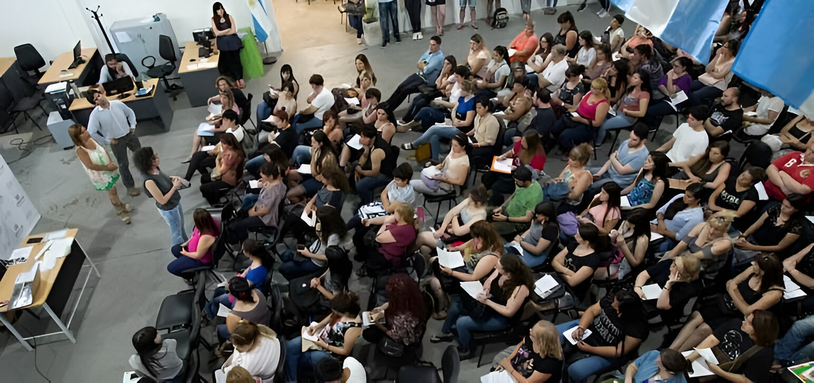

Unahur da comienzo al evento Tic 4
Julio 13 2025 | 2025, Instituto de Tecnología e Ingeniería, Unahur
¡Llega la cuarta edición del UnahurTic 2025!
Por cuarto año consecutivo, la Universidad Nacional de Hurlingham (UNAHUR) será sede del UNAHUR@TIC, un encuentro abierto para la actualización y el intercambio en el campo de las Tecnologías de la Información y la Comunicación (TIC). La cita es el sábado 30 de noviembre, a partir de las 9:00 hs.
“Cuando hablamos de TIC, incluimos informática, redes sociales, programación, sistemas, inteligencia artificial y videojuegos. Todas estas áreas están vinculadas con nuestra oferta académica”, explica Fernando Puricelli, director de las carreras de Licenciatura en Informática, Tecnicaturas en Programación, Videojuegos, Inteligencia Artificial y Redes y Operaciones Informáticas.
Estas jornadas se organizan en tres grandes ejes: participación de estudiantes y docentes, innovación tecnológica y complementariedad entre investigación y formación.
¿Qué actividades habrá?
1er Bloque
Docentes, estudiantes y graduados expondrán proyectos de investigación con fuerte componente tecnológico. El público podrá conocer trabajos sobre sistemas embebidos con Circuit Python, ciberseguridad y migración de aplicaciones de desarrollo a producción.
2do Bloque
Se presentarán experiencias concretas de programación como el Portal de Empleos UNAHUR y una app para la reserva de tickets de eventos. Además, Florencia Cornara dará una charla sobre Inteligencia Artificial Generativa.
3er Bloque
Contará con invitados externos vinculados a tecnologías emergentes y experiencias inmersivas. El artista 3D Cristian Villazón mostrará su proceso de trabajo desde el diseño en 3D hasta la realidad extendida, incluyendo uno de sus últimos proyectos aún en desarrollo. También participará Mercedes Grazzini, diseñadora de videojuegos e ilustradora, quien hablará sobre los desafíos del diseño en el videojuego argentino Storyteller, disponible en la plataforma de Netflix.